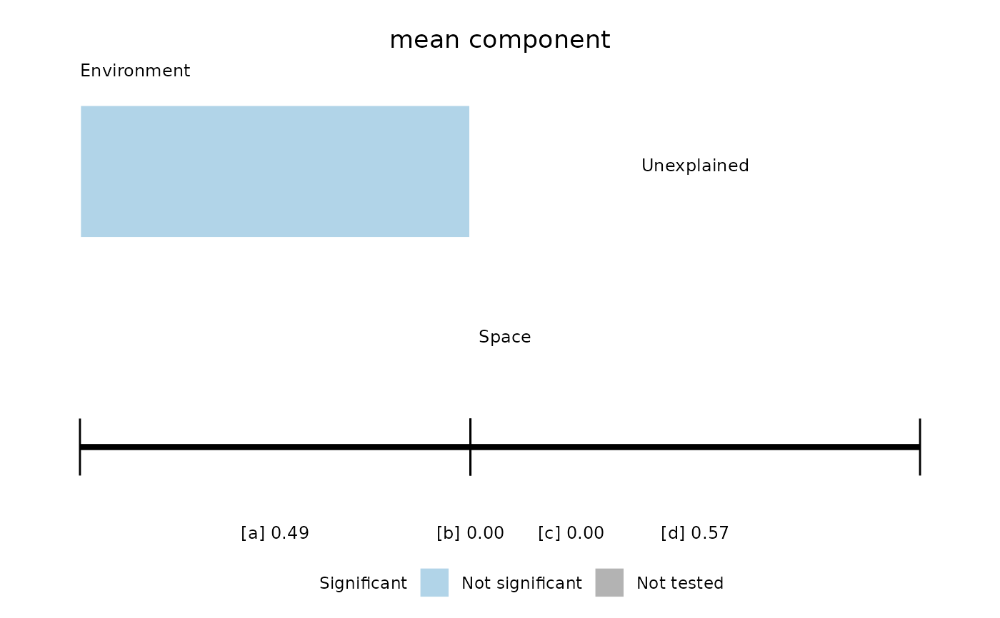

Partition trait or phylogenetic variation between environment and space
Source:R/phylo_gradient.R
trait_partition.RdThe phylogenetic gradient analysis of Peres-Neto et al. (2012). Trait values are
standardised with species weights, which gives each site a mean and a standard
deviation. The chosen component is related to env and space with site weights, and
the variation is split into the fractions of Peres-Neto et al. (2006): a, environment
alone; b, shared; c, space alone; and d, unexplained.
Usage
trait_partition(
comm,
traits,
env,
space,
component = c("mean", "variance"),
n_perm = 999
)Arguments
- comm
Matrix with one row per site and one column per species. Every site needs at least one individual.
- traits
Numeric vector or matrix with one row per species, which can hold traits or the vectors of
phylo_vector(). Species are matched tocommby name, in any order, and those in only one of the two are dropped with a warning.- env, space
Numeric vector, or matrix or data frame, with one row per site. For
space, the article uses Moran's eigenvector maps, whichadespatial::dbmem()gives.- component
"mean"for the composition of sites or"variance"for their dispersion.- n_perm
Number of permutations of sites and of species.
Value
List of class mc_trait_partition with fractions, a data frame with one row
for each of abc, ab, bc, a, b, c and d, and the columns r2,
r2_adjusted, r2_component, p_site, p_taxa and p_max; component;
component_share, the share of the total variation in the component; semipartial,
a matrix of predictors by traits; and p_partial, p_partial_site and
p_partial_taxa, with the larger p-value and those of sites and of species, all
NA if predictors are collinear; and permutations.
Details
The total variation includes both the mean and the dispersion within sites, so r2
answers how much of all the variation each fraction holds, and r2_component how much
of the component. Fractions b and d cannot be tested.
Note
Adapted from the MATLAB function PartitionRDATwoDataMatricesPhylogeny in the
supplement of Peres-Neto et al. (2012).
Article and original code
Raw and adjusted fractions of the total for the mean component agree with
PartitionRDATwoDataMatricesPhylogeny of the supplement, checked in Octave. The code
departs from Appendix A in these points, where we follow the text:
Fractions relative to the component:
MeanaandMeancsubtract the fractions of the total from the fraction of the component.Adjusted values relative to the component use the number of predictors of both sets in the models of one set, and the result can exceed one.
Total variation: Appendix A multiplies it by the number of traits, and the code does not.
Several vectors: the article analyses the vectors of environment and space together in a redundancy analysis, and the script passes only the first.
Variance component: the explained sum of squares contains the intercept, so
babsorbs the mean dispersion. Appendix A asks for the intercept in the models. Here it is removed, andr2is the variation around the weighted mean.Permutations of the variance component: the code takes the square root twice, sets small values to zero in the observed matrix instead of the permuted one, and rescales the permuted values to the observed mean and standard deviation, which the text does not mention. It also calls
WeightedMeanVar, which the supplement does not include. None of this is done here.The code runs
n_perm- 1 permutations in each null distribution.The text stacks two null distributions, and here we report the larger of the two p-values, as in
phylo_vector().
Moran's eigenvector maps of the function MEM of the supplement are the same as those
of adespatial::dbmem(), checked in Octave. Appendix A recommends centring them with
site weights and the code does not, but orthogonality is not needed to partition
variation, and here all predictors are standardised with site weights.
Semipartial correlations follow Appendix A: the square root of the loss of R2 when a predictor leaves the model of all predictors, with the sign of its slope when it is alone. The supplement has no code for them, so they were checked against separate regressions and not in Octave. Appendix A calculates the model without the predictor with the slopes of the full model, which it had just fitted again without it, and here we use the second slopes. With several traits it gives no rule, so here each trait has its own value, relative to the variation of that trait. They are tested as the fractions are, with the loss of R2 as the statistic, and with many predictors they need a correction.
This function partitions variation and does not test each trait against each predictor. For that test, ter Braak (2019) proposed multilevel and weighted averaging regressions combined by the max test, in the package TraitEnvMLMWA.
References
Peres-Neto, P. R., Legendre, P., Dray, S., & Borcard, D. (2006). Variation partitioning of species data matrices: estimation and comparison of fractions. Ecology, 87, 2614–2625. doi:10.1890/0012-9658(2006)87[2614:VPOSDM]2.0.CO;2
Peres-Neto, P. R., Leibold, M. A., & Dray, S. (2012). Assessing the effects of spatial contingency and environmental filtering on metacommunity phylogenetics. Ecology, 93, S14–S30. doi:10.1890/11-0494.1
ter Braak, C. J. F. (2019). New robust weighted averaging- and model-based methods for assessing trait-environment relationships. Methods in Ecology and Evolution, 10, 1962–1971. doi:10.1111/2041-210X.13278
Examples
set.seed(1)
env <- runif(40, 0, 100)
space <- as.matrix(adespatial::dbmem(cbind(1:40), silent = TRUE))[, 1:3]
trait <- setNames(runif(15, 0, 100), paste0("sp", 1:15))
comm <- outer(env, trait, function(e, t) exp(-(e - t)^2 / 800))
colnames(comm) <- names(trait)
out <- trait_partition(comm, trait, env, space, n_perm = 49)
out
#> <mc_trait_partition> mean component, 0.511 of the total variation
#> permutations: 49 free of sites, 49 of species; smallest possible p: 0.02
#> fraction r2 r2_adjusted r2_component p_site p_taxa p_max
#> 1 abc 0.490557 0.4323 0.96059 0.02 0.02 0.02
#> 2 ab 0.489712 0.4763 0.95894 0.02 0.02 0.02
#> 3 bc 0.020911 -0.0607 0.04095 0.58 0.02 0.58
#> 4 a 0.469647 0.4930 0.91965 0.02 0.02 0.02
#> 5 b 0.020065 -0.0167 0.03929 NA NA NA
#> 6 c 0.000846 -0.0439 0.00166 0.98 0.06 0.98
#> 7 d 0.509443 0.5677 0.03941 NA NA NA
plot_trait_partition(out)
